Redesigning a digital healthcare ecosystem for patients, doctors, and universities across CIS markets — three products, one designer.
EMDEU is a digital telehealth integration platform designed for the CIS healthcare market. Patients can view medical records, track health indicators, and book appointments at both private and state clinics — all in one app.
I designed three distinct products within this ecosystem: a patient-facing mobile app, a full medical admin panel with an ICD-10 patient registry, and a lightweight psychological testing tool deployed across three medical universities.
iOS app for health tracking, booking, and teleconsultation — designed for elderly users first.
Doctor workspace with full ICD-10 patient registry, accessibility mode, and unified record management.
Zero-friction psychological questionnaire app for 3 medical universities. No registration, no barriers.
The existing app had a confusing UX flow and outdated visual design. The primary users are elderly patients — a demographic that demands simplified navigation, larger touch targets, and a calm, trustworthy interface.
Doctors were stuck with a visually overwhelming interface. All 18 ICD-10 medical directions were scattered across disconnected screens. Daily clinical work was slow and error-prone. Some doctors are colorblind — the old interface had no accessibility support.
Three medical universities — ZKMU, Medical University of Semey, and the Republican Scientific-Practical Center of Mental Health — needed a psychological testing tool for students but couldn't afford custom development. They needed a simple, frictionless experience: no registration, no complex onboarding, just guide the student from question to result.
Each product has a distinct visual language — calm and personal for patients, structured and professional for doctors, minimal and frictionless for students.
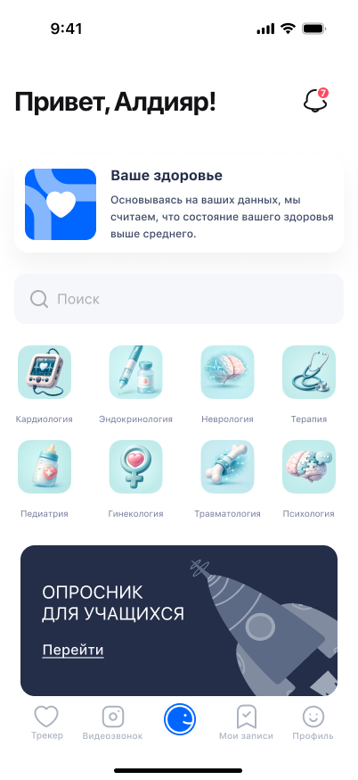
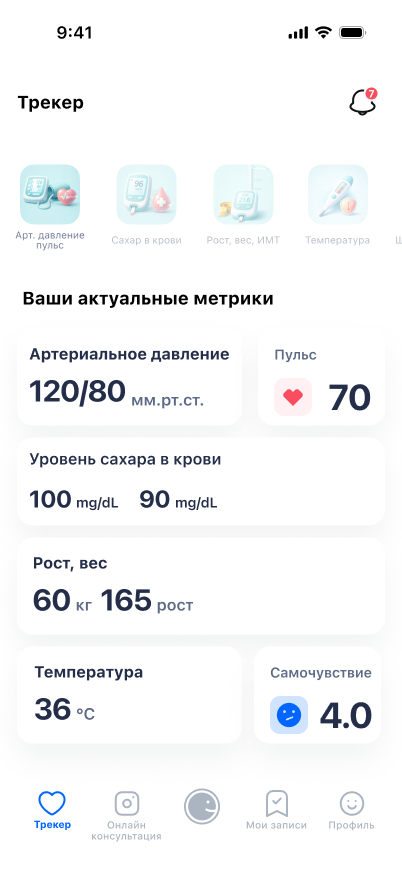
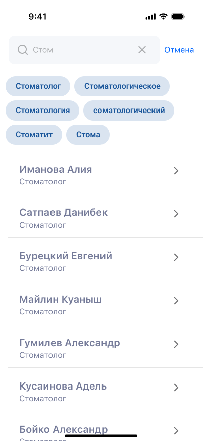
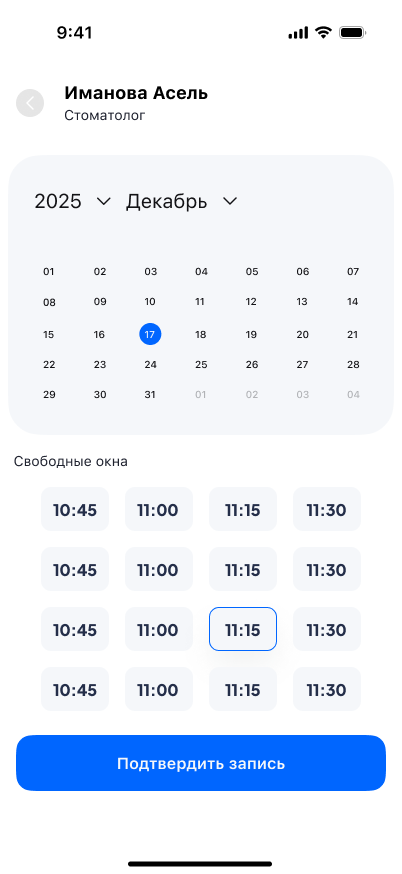
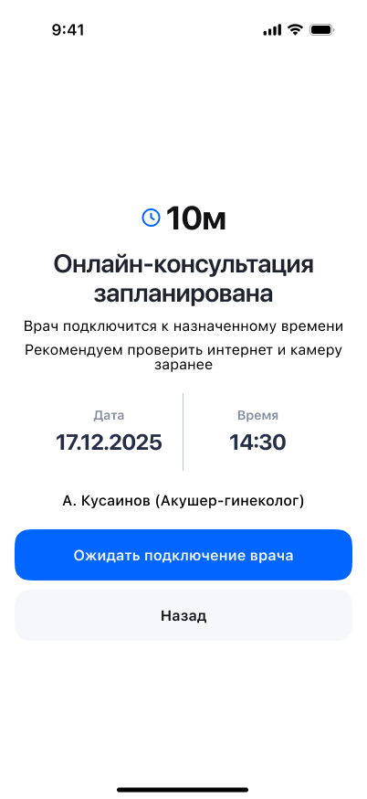
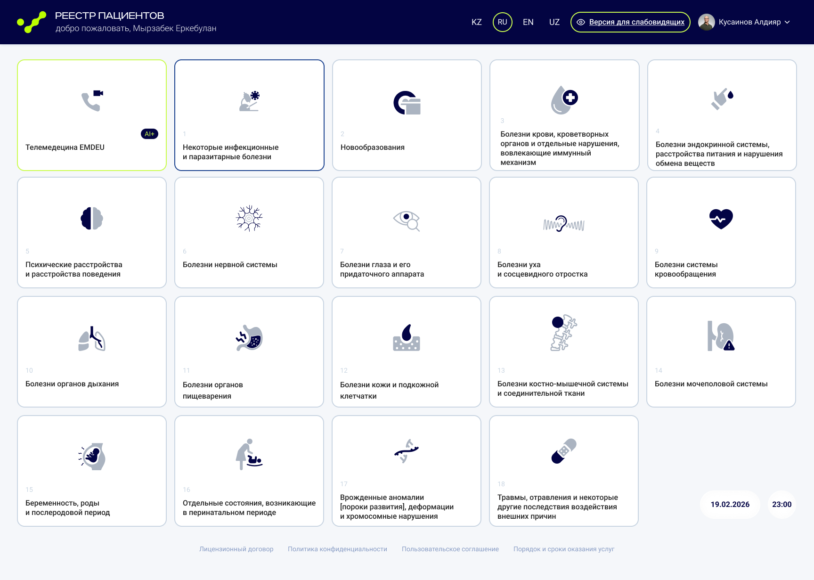
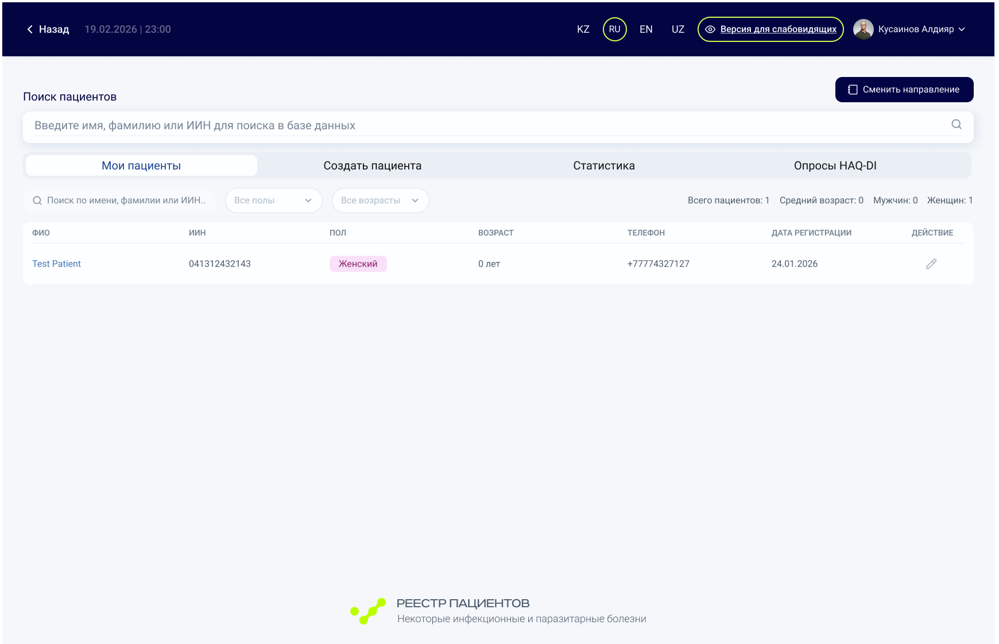
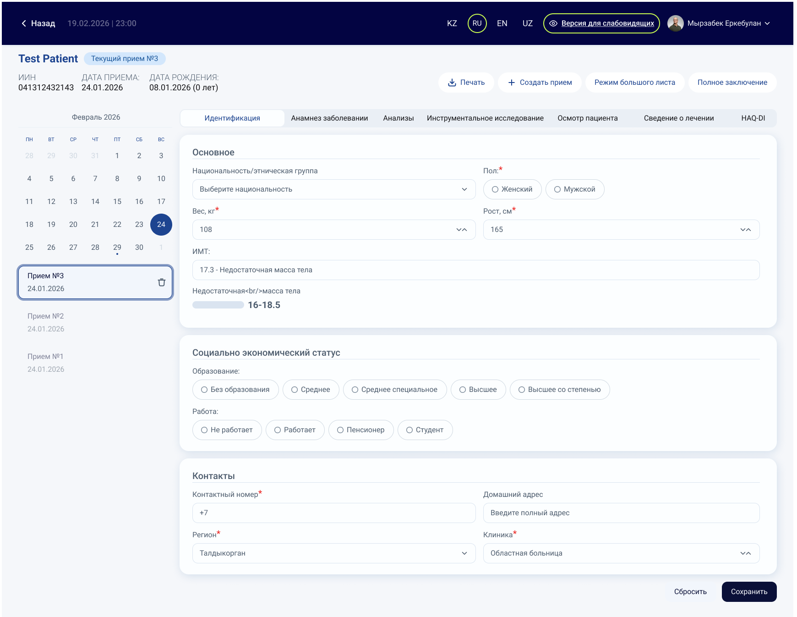
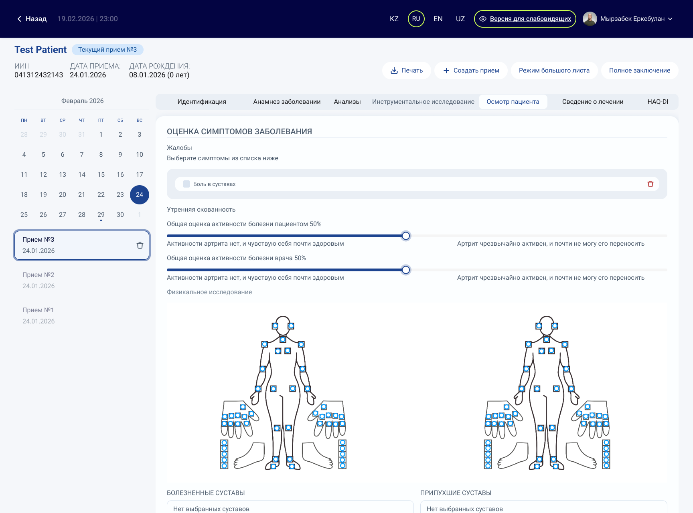
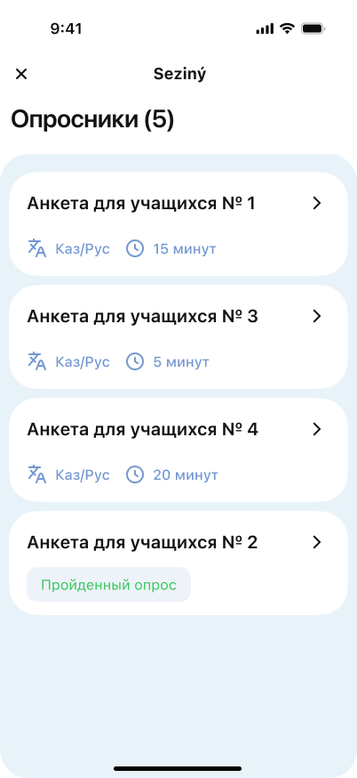
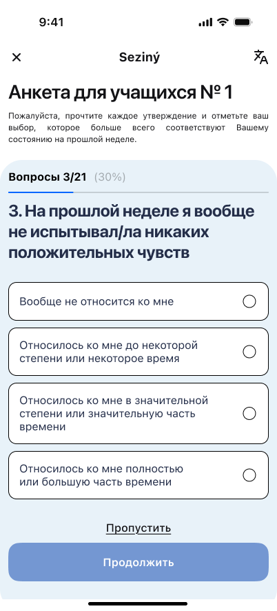
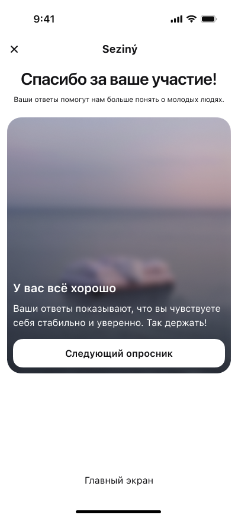
The patient app's primary audience is older adults managing chronic conditions. I simplified navigation to the fewest possible steps, used large touch targets, clear iconography with text labels, and a calm blue-white palette that signals trust. The logic: if an elderly user with low digital literacy can navigate confidently, any user can.
During the project I learned that some of EMDEU's actual medical staff are colorblind or visually impaired. I added a dedicated accessibility mode toggle in the admin panel header — visible on every screen. This wasn't a checkbox requirement; it came from understanding the real users.
The previous admin panel had no unified view — doctors had to jump between disconnected screens to manage different medical directions. I redesigned the registry as a single dashboard where all 18 ICD-10 categories are accessible from one place, with the ability to split or merge patient record pages. Clinical documentation that used to require many clicks now flows in one workspace.
For the rheumatology module, doctors need to mark exactly which joints are painful or swollen. Instead of a dropdown list (slow, error-prone), I designed an interactive body diagram where doctors tap directly on the affected areas. Front and back views, clickable joints — clinical precision with minimal effort.
For the university tool (Seziný), the entire UX principle was remove every barrier. No registration, no account, no unnecessary screens. Open the app — see the questionnaires — answer — get the result. The calm visual design (soft backgrounds, generous spacing) was intentional: psychological questionnaires are sensitive, and the interface should feel safe and non-clinical.
The pre-consultation waiting screen was designed to reduce patient anxiety. For many users this is their first-ever teleconsultation. Showing exactly how many minutes until the call, the date, the time, and the doctor's name — with a single clear action button — removes every possible source of confusion at the most critical moment.
All three products are at the launch stage. EMDEU's platform is set to serve patients, medical professionals, and university students across Kazakhstan and the broader CIS market.
This project required more than UX skills — I had to understand clinical workflows, patient psychology, the daily reality of overworked doctors, and the budget constraints of public universities. Every design decision came from that context.